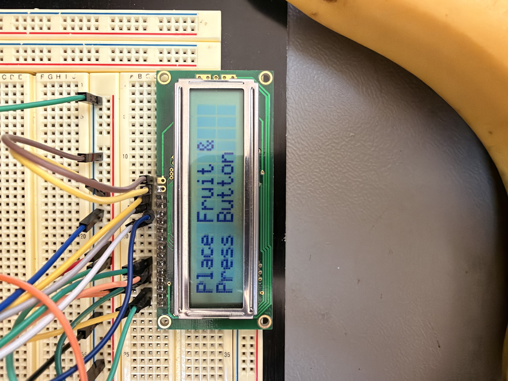
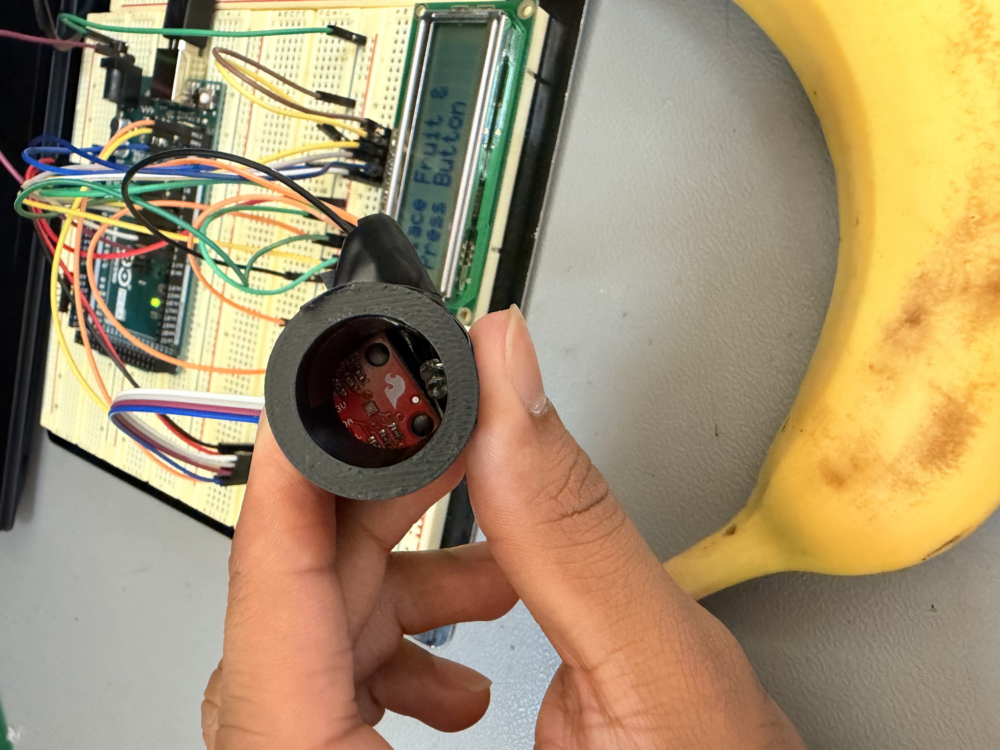
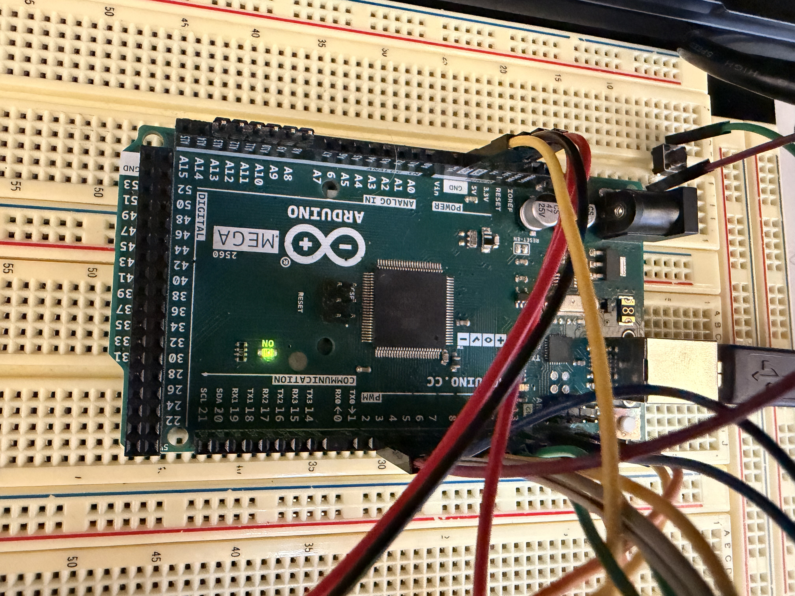
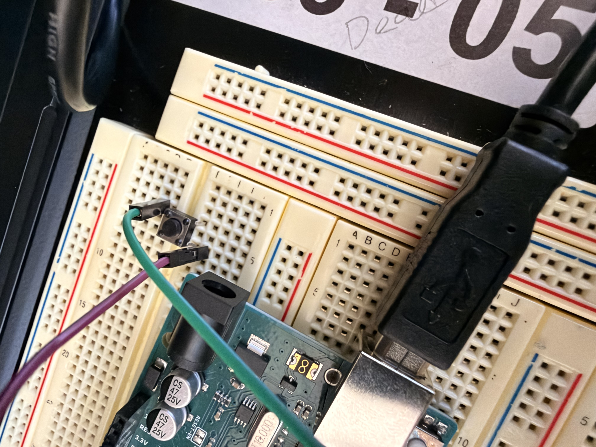

Technical Projects Portfolio
This section serves as a scalable, comprehensive repository for my engineering design work, hardware builds, and embedded software scripts. Each project demonstrates the practical application of core electrical engineering theory, microcontroller programming, and rigorous systems-level problem solving to address physical engineering challenges.
Discovery Project Feature: Automated Fruit Ripeness Evaluation System
Project Overview & Motivation
Evaluating agricultural produce ripeness accurately without destructive testing remains a persistent challenge in supply chains and consumer settings. Visual inspection alone is frequently subjective and unreliable, leading to premature food waste or consumption of underripe produce. The core engineering objective for this individual discovery project was to design, prototype, and program an automated, low-cost optical sensing device capable of reliably quantifying fruit color parameters to assess ripeness objectively. By automating this evaluation process, producers and distribution centers can significantly reduce manual inspection errors, ensuring consistent quality control from farm to shelf.

System Architecture & Development Methodology
The entire development lifecycle followed a disciplined systems engineering approach, systematically divided into hardware integration, firmware development, circuit prototyping, and mechanical enclosure design:
- Hardware Selection & Integration: At the heart of the system architecture is an Arduino microcontroller connected directly to an ISL29125 RGB color sensor. This precision sensor measures exact red, green, and blue light reflection intensities bouncing off fruit surfaces under controlled illumination. A 16x2 LiquidCrystal display provides immediate visual feedback, supported by tactile push buttons and status indicator LEDs for user interaction. Particular attention was dedicated to maintaining stable voltage regulation across the power rails, preventing transient current spikes from introducing measurement errors during continuous sensor polling.
- Circuit Prototyping & Power Distribution: Power rails, ground loops, and signal lines were routed carefully on breadboards to ensure optimal signal integrity, minimize electrical noise, and prevent voltage drop across peripheral sensors prior to finalizing wiring configurations.
- Firmware Engineering: Programming was executed in C++ within the Arduino IDE environment. Custom sensor polling loops were written to calibrate ambient light baselines, filter raw sensor background noise, and map RGB reflectance values against standardized algorithmic thresholds.
- Mechanical Enclosure & CAD Fabrication: To eliminate ambient room light interference—which severely disrupts optical sensors—I designed a custom cylindrical light shroud in Autodesk Fusion 360 and fabricated it via 3D printing. The shroud fits securely over the sensor head, ensuring consistent optical isolation during testing.


Engineering Challenges & Solutions
During testing, initial readings fluctuated due to external ambient light bleeding into the sensor aperture. To solve this, I optimized the CAD enclosure geometry to create a tight, light-tight seal against curved fruit surfaces. Additionally, I implemented software-side moving average filters in C++ to smooth out raw ADC conversion jitters, resulting in stable, repeatable color ratio outputs on the LCD screen.
Project Outcomes & Future Scalability
The resulting prototype successfully differentiates between unripe, ripe, and overripe fruit samples based on quantified chromatic reflectance ratios displayed directly on the LCD interface. This project significantly strengthened my practical competence in microcontroller interfacing, sensor calibration, C++ software logic, and mechanical prototyping.

Future Iteration Roadmap: Future expansions for this architecture include integrating a rechargeable lithium-ion power management circuit, transitioning from a breadboard layout to a custom printed circuit board (PCB) designed in KiCad, and utilizing Bluetooth Low Energy (BLE) to transmit ripeness metrics directly to a mobile dashboard app. Integrating low-power wireless telemetry modules will further enable real-time cloud data logging, transforming this portable prototype into a connected IoT inspection node for agricultural monitoring.